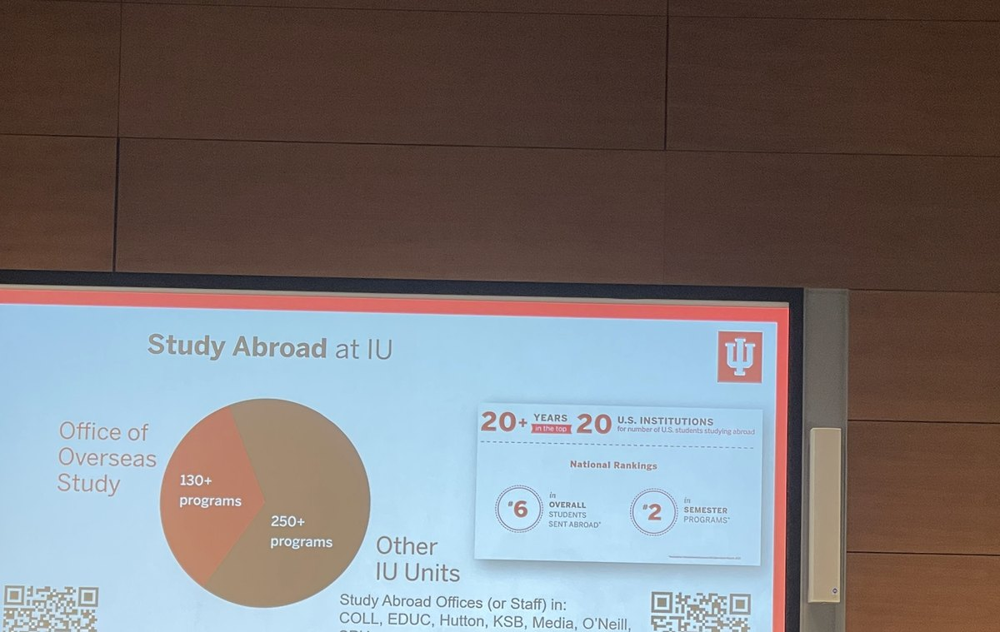

Two sites, same me. This page = sunrise (builder · code · career). matchaxmoxie = sunset (classroom archive · Miss Zhao). Instagram is @zhao.langxi (Zhao / 赵朗曦). jadexzhao is GitHub / code only · never an Instagram handle.
jade zhao 赵
Restaurant kid who ships. Informatics @ IU Luddy, May 2027. ServeIT website lead (IU nonprofit tech clinic). Technical GTM as technical consulting, not just marketing. Madrid spring 2026. Actor and entrepreneur on the side.
Start here · pick a door.
If you’re a recruiter
One scan path. Open roles I care about: Solutions Engineering, Solutions Architecture, and Technical GTM (technical consulting energy, not pure marketing).
- School: Informatics @ Indiana University Luddy · graduating May 2027 · open to relocation
- Ship: Website team lead at ServeIT (IU nonprofit tech clinic). ServeAI is the clinic’s public-interest AI track on the same roster. Accessible partner sites plus Python/PostgreSQL data work.
- GTM: Technical GTM intern at a stealth startup (NYC, unnamed), Jun 2026. Discovery, demos/POCs, integrations, sales ↔ eng translation, pilot handoffs.
- Abroad: Spring 2026 · Complutense, Madrid (IU Overseas Study)
- Also: Actor and entrepreneur (campus creative / ops), light touch
- Stack: TypeScript · React · Python · PostgreSQL · WCAG (web accessibility)
Tip: LinkedIn + the work links below are the resume scan. Twin classroom site is teaching archive only, not ships.

LinkedIn GTM / technical consulting ServeIT · ServeAI how i work jlzhao@iu.edu
GTM / technical consulting
ELI5: GTM (go-to-market) means getting a product in front of buyers and helping them evaluate it. My lane is technical consulting, not campaign marketing: sit on discovery calls, stand up demos and POC sandboxes, prototype integrations, translate what sales needs into what eng can ship, and leave clean pilot-to-production handoffs.
Same muscle as Solutions Engineering / Sales Engineering primers below: technical credibility next to the commercial conversation. Stealth NYC internship (unnamed) is where I practice that motion.
Primers I use to explain the role (public, not my employer):
If you’re a student
Scratch how-tos, IU path pages, and Miss Zhao notes live on matchaxmoxie (sunset classroom).
Tip: start with Scratch studio or the IU Informatics guide. Classroom phrase there: KISS (keep it simple).